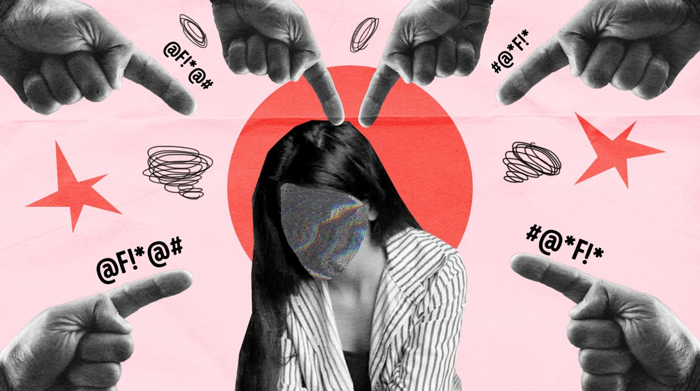

liberdade.com
.png)
liberdade de expressão e discurso de ódio
Bem-vindo ao nosso site educativo sobre liberdade de expressão e discurso de ódio. Aqui, você encontrará informações essenciais para compreender a importância da liberdade de expressão como um direito fundamental, bem como os limites que a sociedade impõe para evitar que esse direito seja usado como ferramenta de discriminação ou violência. Nosso objetivo é promover uma reflexão crítica sobre até onde vai o direito de se expressar e quando ele pode se transformar em discurso de ódio, abordando conceitos, leis, exemplos e debates atuais que ajudam a entender esse tema tão relevante no mundo contemporâneo.
você sabe o que é liberdade de expressão?
A liberdade de expressão é um direito fundamental de liberdade que consiste na faculdade de todos os cidadãos poderem exprimir e divulgar livremente, sem impedimentos e discriminações, o seu pensamento, ou seja, as suas ideias, convicções, pontos de vista, críticas ou valorações pela palavra, imagem, pelo som ou por qualquer outro meio. O n.º 1 do art.º 37.º da Constituição da República (CRP) consagra a liberdade de expressão, a par do direito à informação. A proibição de qualquer espécie de censura constitui uma garantia da liberdade de expressão enunciada através de uma regra de conteúdo particularmente preciso no n.º 2 do art.º 37.º da CRP. O exercício do mesmo direito pode ser objeto de abusos e as infrações cometidas no mesmo exercício ficam submetidas ao direito criminal e ao direito de mera ordenação social (n.º 3 do art.º 37.º da CRP). A liberdade de expressão pode ser objeto de restrições, no caso de colisão com outros direitos fundamentais e interesses públicos constitucionalmente protegidos (n.º 2 do art.º 18.º da CRP).
Quais são os limites entre liberdade de expressão e discurso de ódio?
A linha que separa a liberdade de pensamento da propagação do discurso de ódio é tênue e, frequentemente, objeto de intensos debates. Compreender esse limite é crucial para garantir que a liberdade, tão valiosa, não seja instrumentalizada para fins prejudiciais à coexistência e ao respeito mútuo. |
 |
A liberdade de pensamento é um direito humano universal, consagrado em diversas cartas e declarações internacionais. Ela implica a prerrogativa de cada indivíduo de ter suas próprias convicções, crenças e opiniões, independentemente de sua popularidade ou conformidade com o senso comum. Historicamente, essa liberdade foi vital para o avanço da ciência, da filosofia e das artes, permitindo a contestação de dogmas e a emergência de novas perspectivas. |
No entanto, a manifestação externa desse pensamento não é ilimitada. Quando ideias se transformam em incitação à discriminação, violência ou ódio contra indivíduos ou grupos com base em sua raça, religião, etnia, gênero, orientação sexual ou qualquer outra característica, elas cruzam a fronteira do que é eticamente e legalmente aceitável. O discurso de ódio não é meramente a expressão de uma opinião impopular; ele atenta contra a dignidade, a segurança e os direitos de outras pessoas, prejudicando o tecido social e fomentando a intolerância.
Constituição Federal de 1988, artigo 5º, parágrafo IV: “É livre a manifestação do pensamento, sendo vedado o anonimato”. Esse é o artigo que, para muitas pessoas, resume o direito à liberdade de expressão, um conceito que tem sido muito debatido na sociedade brasileira nos últimos anos. Mas até onde vai esse direito? Divulgação de informações falsas e discursos de ódio contra minorias, por exemplo, podem ser defendidos à luz deste artigo da Constituição?
O tema é tão sensível que já vamos dar a resposta: não, nem tudo pode ser justificado como “liberdade de expressão”. Esse direito não é absoluto e deve ser exercido nos limites da lei, sob pena de caracterizar abuso de direito. Vamos explicar o porquê.
Para o defensor público que atua em Umuarama Cauê Bouzon Ribeiro, a liberdade de expressão engloba a liberdade de crítica e de discordância, desde que respeitosa, sem xingamentos e sem mentiras. “É interessante que a gente tenha discordância. A gente mora em um país democrático, a discordância é o coração da democracia. Mas a partir do momento em que a discordância vira discurso de ódio, a gente tem que combater”. Para ele, com respeito é possível discordar e criticar absolutamente tudo, mas o limite será sempre o direito do outro.
“O limite do direito de liberdade de expressão se dá quando, sob essa pretensa liberdade, atinge-se a honra, a dignidade ou mesmo a democracia. Inclusive existem crimes, previstos no Código Penal, que definem a limitação da chamada liberdade de expressão, como os crimes de injúria, difamação e calúnia”, explica o defensor público, ele mesmo vítima de injúria em 2020, quando um morador da cidade usou as redes sociais para comentar uma decisão do defensor.
“Ele utilizou uma expressão que atingiu diretamente a minha honra e é exatamente este o limite da liberdade de expressão. Além disso, disse que eu estaria em outro estado, quando na verdade eu estava em Umuarama, trabalhando em prol da população local, logo, ele mentiu, outro limite claro da liberdade de expressão”, relembra. A notícia falsa e a ofensa ainda geraram outras manifestações em grupos de whatsapp de moradores da cidade. O defensor teve a placa do carro divulgada nestes grupos e chegou a receber ameaças. “A consequência da postagem virtual dele foi real e séria, e esse é o perigo dos posts falsos e injuriosos. É preciso destacar que as manifestações em redes sociais em nada diferem das manifestações em revistas, jornais ou até mesmo orais. A injúria, a difamação e a calúnia devem ser combatidas, seja no mundo real seja no mundo virtual. Devemos, de uma vez por todas, eliminar o mito de que o que se faz por trás de uma tela de computador ou de celular não tem consequências”.

O discurso de ódio está situado num equilíbrio complexo entre direitos e princípios fundamentais, incluindo a liberdade de expressão e a defesa da dignidade humana. De maneira geral, o discurso de ódio costuma ser definido como manifestações que atacam e incitam ódio contra determinados grupos sociais baseadas em raça, etnia, gênero, orientação sexual, religiosa ou origem nacional. Em geral, as definições são aplicadas a casos concretos e levam em conta várias camadas de regras, como tratados internacionais, a Constituição brasileira, leis nacionais e os termos de uso das plataformas (como Google, Facebook e Twitter).